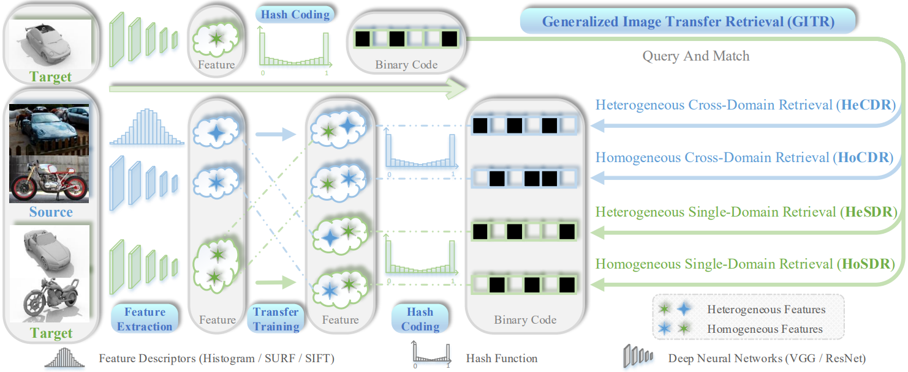

Jiangiln Lu 卢江林Google Scholar DBLP
3688 Nanhai Avenue, |

|
Biography
He was so lucky to work with Jie Zhou, Alexander Lapin, and Witold Pedrycz.
News
Research Experience
-
University of Toronto, online.September 2021--December 2021
Visiting Student: Academic English and Research Skills
Advisor: Lisa Morgan
-
Tencent Music Entertainment Group, Shenzhen, China.November 2020--April 2021
Research Intern: Asymmetric Transfer Hashing
Mentor: Kwok-Wai Hung
-
Kazan Federal University, Kazan, Russia.September 2019--July 2020
Exchange Student: Optimization and Quantum Computing
Advisor: Alexander Lapin and Kamil Khadiev
Publications

|
Generalized Embedding Regression: A Framework for Supervised Feature Extraction.
[PDF] Jianglin Lu, Zhihui Lai, Hailing Wang, Yudong Chen, Jie Zhou, Linlin Shen. IEEE Transactions on Neural Networks and Learning Systems ( TNNLS), 2022.
Jianglin Lu, Hailing Wang, Jie Zhou, Yudong Chen, Zhihui Lai, Qinghua Hu. Pattern Recognition ( PR), 2021.
Jianglin Lu, Jingxu Lin, Zhihui Lai, Hailing Wang, Jie Zhou. Information Sciences ( INS), 2021.
Jianglin Lu, Hailing Wang, Jie Zhou, Mengfan Yan, Jiajun Wen. Information Sciences ( INS), 2022.
Shenghua Zhong, Jingxu Lin, Jianglin Lu, Ahmed Fares, Tongwei Ren. ACM Transactions on Multimedia Computing, Communications, and Applications ( TOMM), 2022.
|


|
Label Self-Adaption Hashing for Image Retrieval.
[PDF] Jianglin Lu, Zhihui Lai, Jingxu Lin, Qinghong Lin, Jie Zhou. International Conference on Pattern Recognition ( ICPR), 2020.
Tao Wang, Jianglin Lu, Zhihui Lai, Heng Kong, Jiajun Wen. International Joint Conference on Artificial Intelligence ( IJCAI), 2022.
Yudong Chen, Sen Wang, Jianglin Lu, Zhi Chen, Zheng Zhang, Zi Huang. ACM International Conference on Multimedia ( ACM MM), 2021.
|


|
 |
Asymmetric Transfer Hashing with Adaptive Bipartite Graph Learning.
[PDF] Jianglin Lu, Jie Zhou, Yudong Chen, Witold Pedrycz, Zhihui Lai, Kwok-Wai Hung. arXiv, 2022.
|
© Jianglin Lu | Last updated: Augst 01, 2022